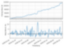

Stonks: Algorithmic Trading Bots
Work in Progress
Algorithmic trading is the process of having an automated software executing orders based on historical and present data. This project, currently developed in Python, is a system to design, backtest, and optimize trading bots. Integrated with Alpaca broker specifically designed for algorithmic trading. The simulation fetches historical data from Polygon.io for backtesting every minute over years. I have also included a walk-forward routine that optimize the algorithm at the start of each trading week for the previous couple of weeks in order to adjust for variations in the market. This is not designed for high frequency trading as there is no chance me in my bedroom business headquarters can compete with the massive infrastructure with special high speed connections to the market exchanges.
In addition to the testing framework, I have programmed several bots. It is difficult to compare portfolios as the success may be the result of luck so often the Sharpe ratio is compared. It is a measure of risk to reward; a larger value represents either a higher reward and/or more consistent reward. My real-world results with complete bot control from 2020-06-01 to 2020-07-17 was about 20% P/L and a Sharpe ratio of 6.24 (Anything over 3 is excellent). The plot is the result of one bot's simulation over the wild market of 2020 so far. That bot had 290% P/L and a Sharpe ratio of 6.84. The same bot when simulated over 2017-2019 had more reasonable results of 130% (33%/yr) P/L and Sharpe ratio of 1.15. These bots are value trading strategies that place one buy and one sell order a day. I am working on developing bots that use day trading strategies that buy and sell multiple securities multiple times a day. This requires further development of the testing framework to proper simulate order execution price as these strategies rely on making small profits with large volume which a few cents change on price can mean success or failure.
The current to do list on this project is use historical quotes to execute orders at the NBBO (National Best Bid and Offer) price, consider changing to C++ to allow lower level access to improve data fetching speed, and develop day trading strategies.
tags: automation, finance, Python, software